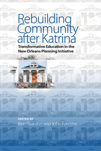

<body bgcolor="#FFFFFF" text="#000000" link="#0000FF" vlink="#CC0000" alink="#CC0000"><center><hr width="350" size="1" align="center" noshade>How a community-university partnership brought together analysis and political muscle to sustain New Orleans’ Lower Ninth Ward<hr width="350" size="1" align="center" noshade><p><a href="https://cdcshoppingcart.uchicago.edu/Cart/ChicagoBook.aspx?ISBN=9781439910993&&PRESS=temple" target="_top">Buy this book!</a> | <a href="https://cdcshoppingcart.uchicago.edu/Cart/Cart.aspx?PRESS=temple" target="_top">View Cart</a> | <a href="https://cdcshoppingcart.uchicago.edu/Cart/Cart.aspx?PRESS=temple" target="_top">Check Out</a></p><p></p></center><!--none//--><h1>Rebuilding Community after Katrina</h1>
<H2>Transformative Education in the New Orleans Planning Initiative</H2>
<h3>edited by Ken Reardon and John Forester</h3>
<P>cloth 1-4399-1099-5 $95.50, Nov 15, <FONT COLOR=#990033>Available</FONT>
<br>paper 1-4399-1100-2 $34.95, Nov 15, <FONT COLOR=#990033>Available</FONT>
<br>Electronic Book 1-4399-1101-0 $34.95 <FONT COLOR=#990033>Available</FONT>
<BR> 296 pp
6 x 9
2&nbsp;map(s) 11&nbsp;halftones
</P><BLOCKQUOTE><I>"An important, engaging, and instructive story focused on civic engagement work. Against all odds, a team of faculty and students create a coordinated university response to a major natural disaster. </i>Rebuilding Community after Katrina<i> tells the story from a wide array of perspectives, and the voices are powerful. This book skillfully demonstrates what universities can realistically contribute to community rebuilding. It does an excellent job, too, of showing how learning by doing through community-university partnerships offer students a transformative educational experience that they may not be able to achieve otherwise."</i> <br>&#151<b>Lorlene Hoyt</b>, Director of Programs and Research, Talloires Network, Tufts University</I></BLOCKQUOTE>
<P><I>Rebuilding Community after Katrina</I> chronicles the innovative and ambitious partnership between Cornell University’s City and Regional Planning department and ACORN Housing, an affiliate of what was the nation’s largest low-income community organization. These unlikely allies came together to begin to rebuild devastated neighborhoods in New Orleans after Hurricane Katrina.
<P>The editors and contributors to this volume allow participants’ voices to show how this partnership integrated careful, technical analysis with aggressive community outreach and organizing. With essays by activists, organizers, community members, and academics on the ground, <I>Rebuilding Community after Katrina</I> presents insights on the challenges involved in changing the way politicians and analysts imagined the future of New Orleans’ Ninth Ward.
<P>What emerges from this complex drama are lessons about community planning, organizational relationships, and team building across multi-cultural lines. The accounts presented in <I>Rebuilding Community after Katrina</I> raise important and sensitive questions about the appropriate roles of outsiders in community-based planning processes.
<P><I>Contributors include: Efrem Bycer, Richard Hayes, Marcel Ionescu-Heroiu, Praj Kasbekar, Richard Kiely, Crystal Lackey Launder, David Lessinger, Sarah McKinley, Anisa Mendizabal, Brian Rosa, Andrew Rumbach, Joanna Winter, and the editors.</I>
<BR>&nbsp;<h2>Reviews</h2>
<p><i>"A lively, honest, exciting book, </i>Rebuilding Community after Katrina<i> provides an insider’s perspective on trying to plan and organize the rebirth of the Lower Ninth Ward in New Orleans. It provides insiders’ perspectives, and the voices resonate loud and clear—each with their own style and honesty. The interviews are fascinating. The intensely compelling tales show what happens when you put students and faculty into a truly volatile situation with high stakes. This isn’t your average service learning program."</i><br>&#151<b>Randy Stoecker</b>, Associate Professor in the Department of Community and Environmental Sociology at the University of Wisconsin, and author <i>The Unheard Voices: Community Organizations and Service Learning</i>
<p><i>"[This book] compiles reflections on an unusual initiative. The ACORN-University Partnership (AUP) brought together a New Orleans community organization, ACORN, and a New York university, Cornell, to contribute to the city's rebuilding in the months after Hurricane Katrina.... The book is frank in reflecting on power disparities and the challenges encountered along the way.... </i>Rebuilding Community after Katrina<i> is also open about the personal experiences of those working on the plan. For instance, an Indian graduate student reflects on her prejudices and experiences of racism in the US.... In detailing AUP's intersection of academic and on-the-ground work, the book argues for a more service-oriented approach to planning education."</i><br>&#151<b><i>Environment & Urbanization</i></b>
<BR>&nbsp;<H2>About the Author(s)</H2>
<P><b>Ken Reardon</b> is Professor and Director of the Graduate Program in Urban Planning and Community Development at the University of Massachusetts at Boston. His work on university-community engagement, including the East St. Louis Action Research Project, has earned him the American Institute of Certified Planners President’s Award, the Dale Prize for Excellence in City Planning, and the Ernest Lynton Award for the Scholarship of Community Engagement.</P>
<P><b>John Forester</b> is a Professor of City and Regional Planning at Cornell University. He is the author of <i>Planning in the Face of Conflict</i> and <i>Dealing with Differences: Dramas of Mediating Public Disputes</i>, and is the co-author (with Norman Krumholz) of <i><a href="694_reg.html" target="_top">Making Equity Planning Work: Leadership in the Public Sector</a></i>.</P>
<BR><H2>Subject Categories</H2>
<p><A HREF="/tempress/sociology.html" TARGET="_top">Sociology</a>
<BR><A HREF="/tempress/social.html" TARGET="_top">Community Organizing and Social Movements</a>
<BR><A HREF="/tempress/nature.html" TARGET="_top">Nature and the Environment</a>
</p>
<p align="center"><a href="https://cdcshoppingcart.uchicago.edu/Cart/ChicagoBook.aspx?ISBN=9781439910993&&PRESS=temple" target="_top">Buy this book!</a> | <a href="https://cdcshoppingcart.uchicago.edu/Cart/Cart.aspx?PRESS=temple" target="_top">View Cart</a> | <a href="https://cdcshoppingcart.uchicago.edu/Cart/Cart.aspx?PRESS=temple" target="_top">Check Out</a></p><p><font face="Arial" size="1"><a href="copyright.html" onMouseOver="window.status='Web Copyright Policy';return true;" onMouseOut="window.status=''" title="Web Copyright Policy">&copy;</a> 2016 <a href="http://www.temple.edu" target="new" onMouseOver="window.status='Link to Temple University home page';return true;" onMouseOut="window.status=''" title="Link to Temple University home page">Temple University</a>. All Rights Reserved. http://www.temple.edu/tempress/titles/2301_reg.html</font></p>